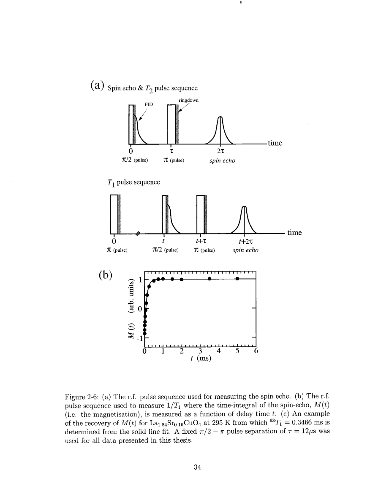
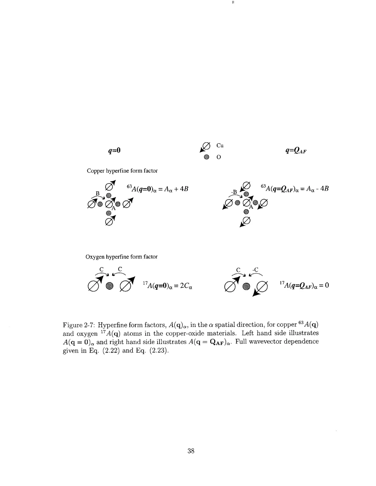

Singer · supplied source 2002 · chapter unit
2. How the two nuclei ask different questions
NQR frequency, Knight shift and T₁ are distinct observables with distinct nuclear and wavevector weighting.
The question: How can a resonance frequency select charge environments while relaxation reports spin dynamics?
Before you start: the terms you need
- Nominal x: Sr atoms per LSCO formula unit, used as the average hole-doping label.
- Electric field gradient (EFG): curvature of the electric potential at a nucleus; determines the Cu quadrupole resonance.
- Knight shift: the nuclear resonance shift caused by electronic magnetic response, with orbital and spin contributions.
- T₁ and T₂: recovery of longitudinal nuclear magnetization and decay of transverse coherence; they answer different questions.
- Hyperfine form factor: the wavevector-dependent weighting through which a nucleus samples electronic spin fluctuations.
- HWHM: half width at half maximum; the thesis also defines an effective width from the second moment.
See → explain → check
Follow the idea in 3 pictures.
Picture 1 / 3
Quadrupole frequency versus relaxation
Look for: Read charge-defined level separation and magnetic relaxation as different steps.
Swipe across the picture to read every label, or enlarge it below.
- Cu NQR frequency
- Cu T₁ recovery
Teaching schematic; no measured points or calibrated scales.
An EFG-selected frequency can be paired with a magnetic fluctuation measurement.
Check the original: PDF p. 30 · PDF p. 31 · PDF p. 32 · PDF p. 33
Picture 2 / 3
Cu and oxygen weight different q
Look for: Find the oxygen cancellation near the commensurate AF point.
Swipe across the picture to read every label, or enlarge it below.
- AF-weighted response
- Oxygen filter
- Filtered contribution
Normalized toy q cut showing cancellation at qa = π; not the thesis's measured susceptibility.
Agreement between nuclear probes compares different weighted electronic responses.
Check the original: PDF p. 36 · PDF p. 37 · PDF p. 38 · PDF p. 39
Picture 3 / 3
Measure recovery, acquire an echo
Look for: Follow the inversion delay, echo and fit.
Swipe across the picture to read every label, or enlarge it below.
- Invert populations
- Wait t
- Detect an echo
- Fit M(t)
Teaching schematic; no measured points or calibrated scales.
Echo visibility is part of the recovery measurement.
Check the original: PDF p. 32 · PDF p. 33 · PDF p. 34 · PDF p. 35
Explain it back.
Try answering aloud before opening the explanation.
Is Cu NQR T₁ a direct charge-fluctuation measurement because NQR uses an EFG?
No. The charge environment sets resonance energy; isotope tests indicate predominantly magnetic relaxation here.
Why does isotopic enrichment matter for the local-state question?
It prevents overlapping isotopic resonances from confusing which environments contribute at one measurement frequency.
Go deeper Follow the full argument
Sample controls and isotope separation
The polycrystalline samples are prepared by repeated mixing, reaction, grinding and oxygen annealing. Magnetometry supplies superconducting transition information and diffraction supplies lattice constants. These measurements test phase purity and gross composition but do not directly resolve the nanometre electronic distribution. More decisive for the present claim is the comparison of frequency-dependent Cu relaxation between a high-quality single crystal and enriched powder near optimal doping. Their similar behavior weakens the argument that powder preparation alone causes the reported phenomenon. Enriching ⁶³Cu is essential because the natural ⁶⁵Cu isotope has a nearby quadrupole frequency; overlapping isotopic spectra would mix different selected environments. The samples are therefore not just chosen to maximize signal. Their isotope content makes a frequency-resolved measurement interpretable.
PDF p. 22 · PDF p. 23 · PDF p. 24 · PDF p. 25 · PDF p. 27 · PDF p. 29
Energy levels and the recovery observable
Cu has nuclear spin I = 3/2. Its quadrupole moment couples to a traceless EFG tensor, leaving two zero-field doublets and a quadrupole resonance whose principal direction follows the EFG. In the tetragonal setting the main direction is approximately c and the small asymmetry correction can usually be treated perturbatively. The level splitting is determined by charge and structure, but the transitions returning nuclear populations to equilibrium are predominantly driven by electronic magnetic fluctuations. Isotope relaxation ratios agree with a magnetic rather than charge-fluctuation mechanism. Singer measures an inversion recovery and fits its echo-integrated magnetization with the I = 3/2 NQR recovery form, including the factor 3 in the exponent. That factor is a nuclear-transition convention; one must not silently treat the fitted time as an ordinary spin-½ recovery constant. The nominal 12 μs pulse separation minimizes visibility bias within the apparatus, but does not make that bias vanish.
PDF p. 27 · PDF p. 28 · PDF p. 29 · PDF p. 30 · PDF p. 31 · PDF p. 32 · PDF p. 33 · PDF p. 34 · PDF p. 35
Hyperfine geometry is a filter
The Cu nucleus couples to its own Cu electronic spin and neighboring spins through transferred hyperfine coupling. Contributions at the antiferromagnetic wavevector remain substantial. A planar oxygen sits between two Cu sites; equal and opposite neighboring moments cancel at the exactly commensurate antiferromagnetic wavevector in the ideal nearest-neighbor form factor. Oxygen relaxation therefore strongly suppresses that particular part of the spectrum, while its Knight shift measures the uniform static response. This is a weighting statement, not proof that oxygen is blind to all antiferromagnetic dynamics: finite incommensurability and finite-width fluctuation peaks can leak through. The experimental electronics then add another filter in time. Resonant excitation, echo detection, quadrature acquisition and phase cycling separate tiny nuclear signals from pulse ringdown. The theoretical observable and the practically measurable observable must both be understood before a frequency-dependent T₁ can be assigned to a local electronic environment.
PDF p. 35 · PDF p. 36 · PDF p. 37 · PDF p. 38 · PDF p. 39 · PDF p. 40 · PDF p. 41 · PDF p. 42
Translate the mathematics Essential equations and their meaning
M(t) = M∞ + (M₀−M∞) exp(−3t/T₁)
Symbols: M is echo-integrated magnetization; t is the recovery delay.
Source Eq. 2.17 for a single magnetic Cu NQR relaxation process; nonexponential recoveries require additional analysis.
Acu(q) = Aα + 2B[cos(qx a)+cos(qy a)]
Symbols: Aα is the on-site coupling; B is nearest-neighbor transferred coupling.
Shows why q = 0 and QAF have different coupling combinations.
AO(q) = 2Cα cos(qbond a/2)
Symbols: Cα couples planar O to a neighboring Cu; qbond is along the Cu–O–Cu bond.
The ideal nearest-neighbor oxygen form factor vanishes at the commensurate AF point.
Read the evidence Guided original source pages

PDF p. 34

PDF p. 38
What the evidence supports—and where it stops
- Ideal form factors are approximations to hyperfine geometry, not absolute isolation of a single wavevector.
- Sample controls constrain gross inhomogeneity; the probe still sees relaxation-weighted nuclei.
Source version, reading coverage and preservation
Every substantive chapter and appendix was read from locally generated Windows OCR of the scanned original. Key figures, symbols, equations and boundaries were checked on readable full-page renders; PDF and printed page numbers agree at inspected locations.
Reviewed body pages: 10, 11, 12, 13, 14, 15, 16, 17, 18, 19, 20, 21, 22, 23, 24, 25, 26, 27, 28, 29, 30, 31, 32, 33, 34, 35, 36, 37, 38, 39, 40, 41, 42, 43, 44, 45, 46, 47, 48, 49, 50, 51, 52, 53, 54, 55, 56, 57, 58, 59, 60, 61, 62, 63, 64, 65, 66, 67, 68, 69, 70, 71, 72, 73, 74, 75, 76, 77, 78, 79, 80, 81, 82, 83, 84, 85, 86, 87, 88, 89, 90, 91, 92, 93, 94, 95, 96, 97, 98, 99, 100, 101, 102, 103, 104, 105, 106, 107, 108, 109, 110, 111, 112, 113, 114, 115, 116, 117, 118, 119, 120, 121, 122, 123, 124, 125, 126, 127, 128, 129, 130, 131, 132, 133, 134, 135, 136, 137. Bibliography pages 138–144 were not independently verified against every cited publication. Front matter was inspected for title, abstract and chapter mapping. The guide does not claim manual visual reading of every scan or exact transcription of all derivations; OCR is imperfect and the damaged abstract region was checked against the conclusions.
Source SHA-256: e5fdb96ea81a06f7a51624e02fa58319dc3d21926a030e06fbbedc7061f5937d. Original file bytes preserved locally, and in this room’s original download.
Thesis - Singer - 2002 - Nuclear resonance of electronic inhomogeneity in LSCO.pdf